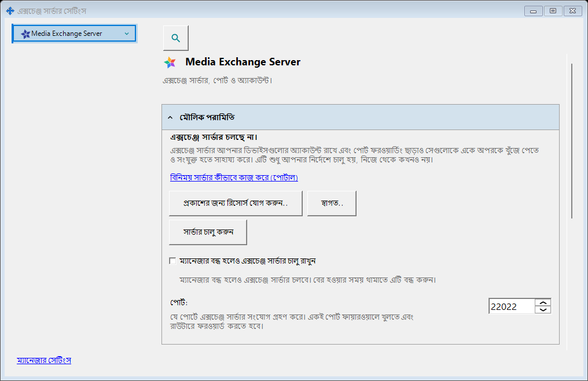
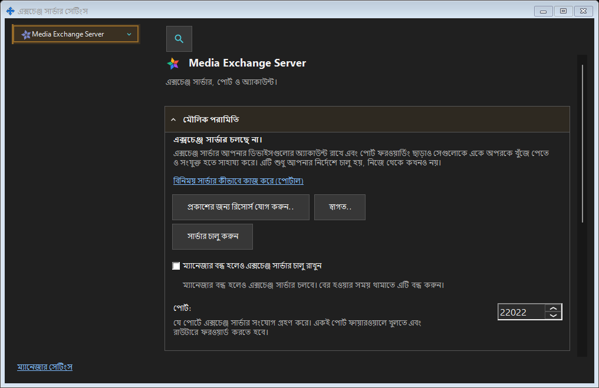

এক্সচেঞ্জ সার্ভার সেটিংস
এটি কীসের জন্য
SFTP: পোর্ট, সংযোগ সীমা, স্থানীয় নেটওয়ার্ক ও Windows পরিষেবা। এক্সচেঞ্জ সার্ভার: ঠিকানা, TLS, অ্যাকাউন্ট, ডিভাইস, আমন্ত্রণ, পরিষেবা, লগ ও দূরবর্তী প্রশাসন।


এই ক্রমে
ট্রে বা উপাদানের লিংক থেকে খুলুন। উইন্ডো খোলা বা বন্ধ করা সার্ভার চালু বা বন্ধ করে না। দূরবর্তী প্রবেশে স্থানীয় সার্ভার লাগে না।
উপাদানসমূহ
এক্সচেঞ্জ সার্ভার সেটিংস
SFTP: পোর্ট, সংযোগ সীমা, স্থানীয় নেটওয়ার্ক ও Windows পরিষেবা। এক্সচেঞ্জ সার্ভার: ঠিকানা, TLS, অ্যাকাউন্ট, ডিভাইস, আমন্ত্রণ, পরিষেবা, লগ ও দূরবর্তী প্রশাসন। ট্রে বা উপাদানের লিংক থেকে খুলুন। উইন্ডো খোলা বা বন্ধ করা সার্ভার চালু বা বন্ধ করে না। দূরবর্তী প্রবেশে স্থানীয় সার্ভার লাগে না।
ম্যানেজার সেটিংস · SFTP শেয়ারিং সেটিংস · এক্সচেঞ্জ সার্ভার সেটিংস